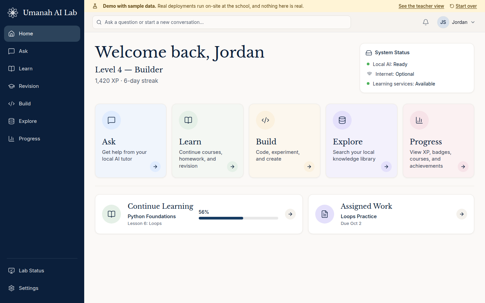
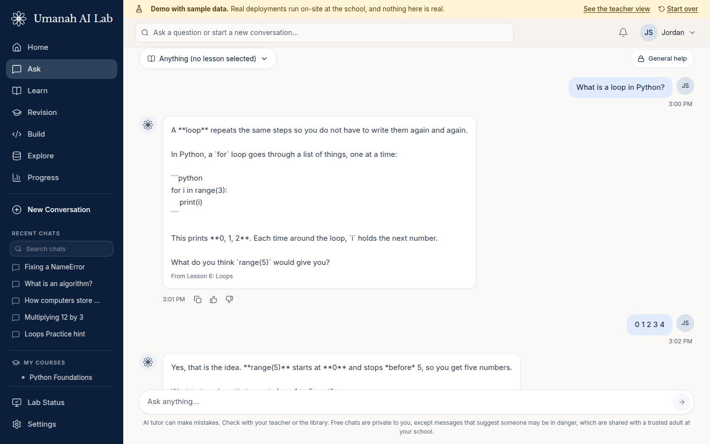
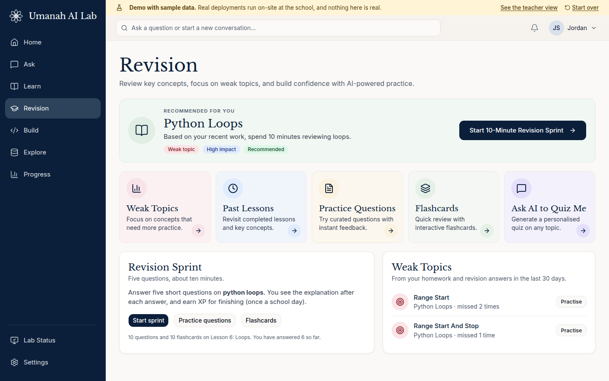
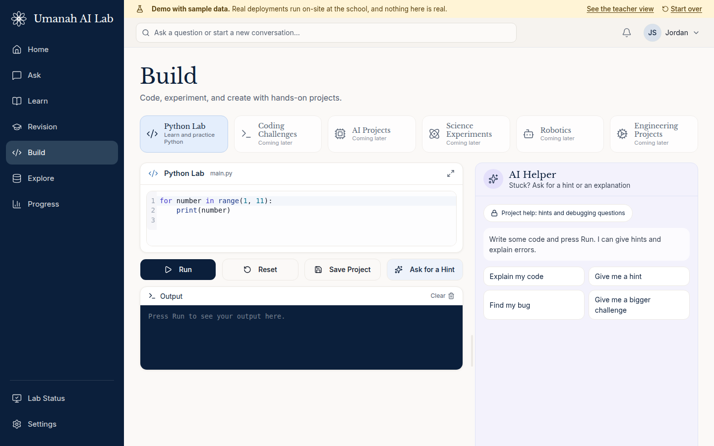
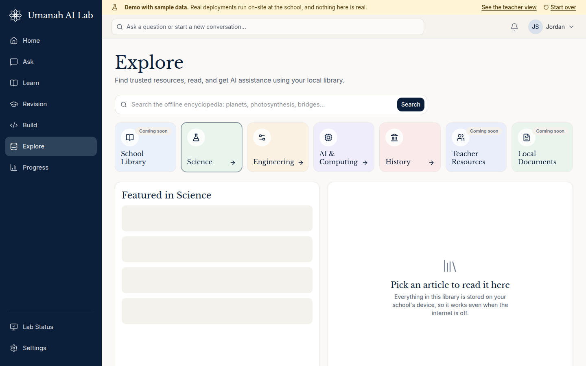
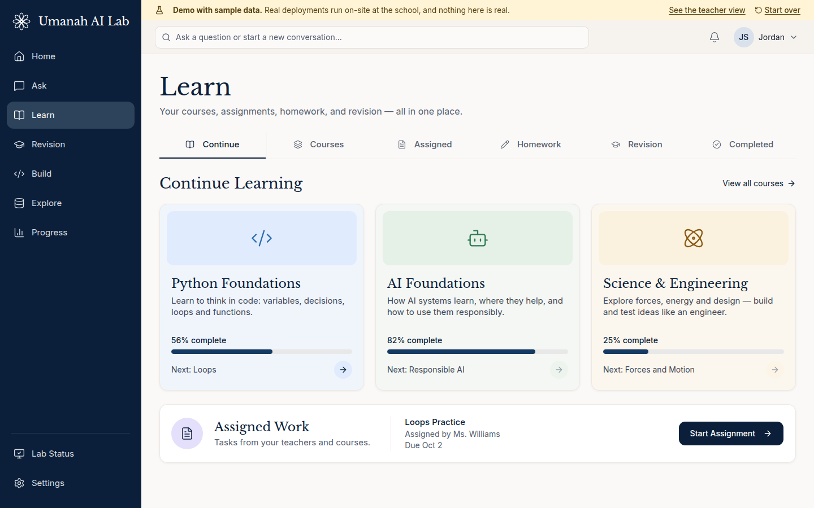
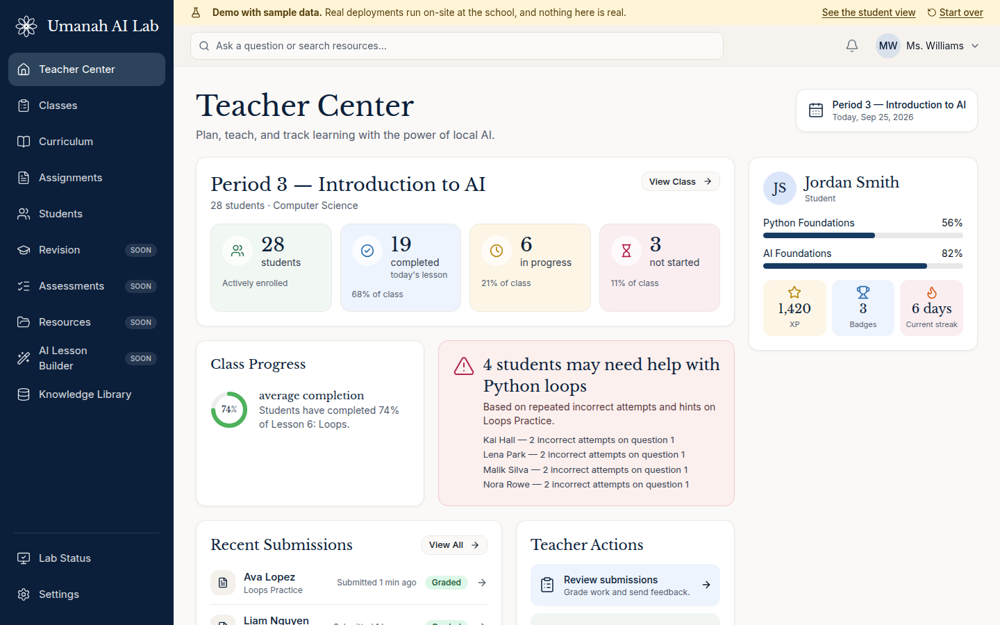

{kind=link}
{kind=link}
{kind=link}
{kind=link}
{kind=link}
{kind=link}
AI Lab Mini
A compact appliance that serves a classroom, library, or small community space.
- A small group of students at a time
- Good for pilots and introductory use
AI Lab | Local AI | Education | Deployment
Local AI infrastructure for classrooms, libraries, and community learning environments.
Umanah AI Lab gives schools and community institutions their own private AI learning environment. It runs locally, reaches students through the devices they already have, and is designed to work without per-student AI subscriptions or a constant internet connection.
Prototype #001 is live. The demo uses made-up students and sample data.

A real screenshot of the running demo. Sample data.
Many schools have unreliable internet. Student conversations leave the building and sit on someone else's servers. The rules change when a provider changes its terms. And a subscription for every student adds up fast.
Bring the intelligence to the classroom instead of sending the classroom to the cloud.
Students open a browser and sign in. Everything runs on one box at the school. Five actions cover the whole experience.
A tutor that gives help grounded in the student's lessons, and hints (not answers) in homework.
Courses, lessons, assignments, and a Revision page with weak topics, practice questions, and flashcards.
Write and run Python in the browser, with an AI helper that explains errors and gives hints.
Search an offline library. It works with the internet unplugged.
XP, levels, badges, streaks, and projects: growth and accomplishment, not public ranking.
No mock-ups. These are screenshots of the demo you can open right now. All names, chats, and numbers are sample data.






The appliance joins the school network and serves the whole class.
Students and teachers use the laptops, tablets, and phones they already have.
The tutor, lessons, and library all run on the box. With the internet unplugged, learning continues.
Student conversations stay at the school. They are not sent to Umanah.
The tutor sits inside a learning loop: lesson, practice, tutor help, exercise, project, achievement. Numbers are computed by code, not guessed by the model.
Add students one by one or from a spreadsheet, print login cards, set how much help the tutor may give on each assignment, grade work with a score and comment, and see which students may need help.
One platform, sized to the setting. Capacity figures will be published once they are measured on the final hardware. Today the prototype runs on a single development server.
A compact appliance that serves a classroom, library, or small community space.
A shared deployment for an entire school or several classrooms.
Higher-performance deployment for advanced use and research.
Umanah LabOS brings proven open-source software together into one simple experience for schools, so no one has to assemble it themselves.
Includes open educational resources from leading open-content projects. The offline library in the demo uses Simple English Wikipedia, shared under the Creative Commons Attribution-ShareAlike licence.
Open content is credited where it is shown. Endorsements are never implied.
We are looking for schools, libraries, nonprofits, community organizations, technology and hardware partners, and philanthropy who want to help shape the first pilots.
Tell us a little about your setting. We read every request.
No pilot has started yet, and no partner relationships are implied by this page.